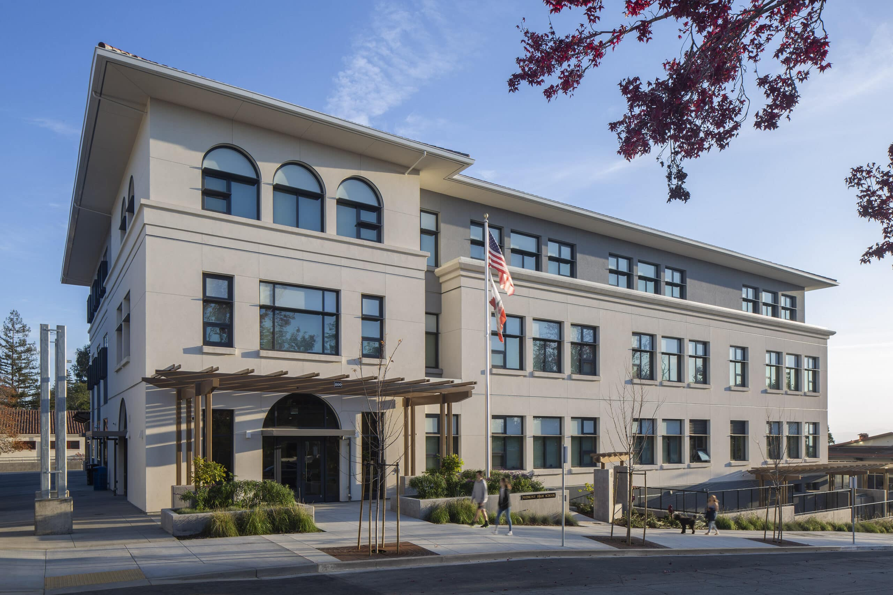
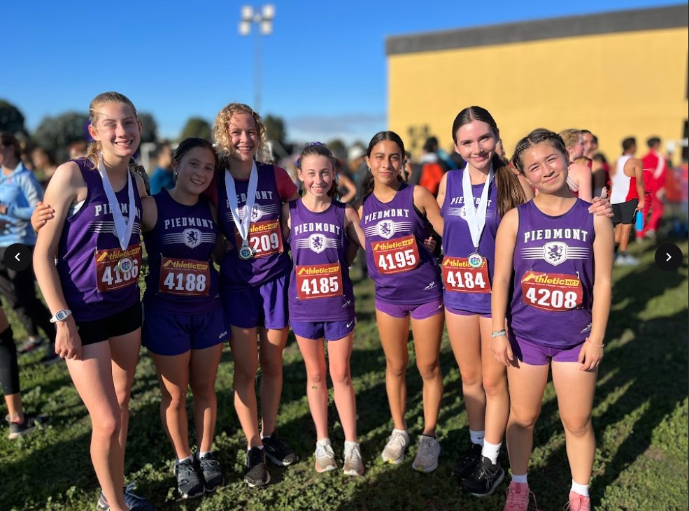
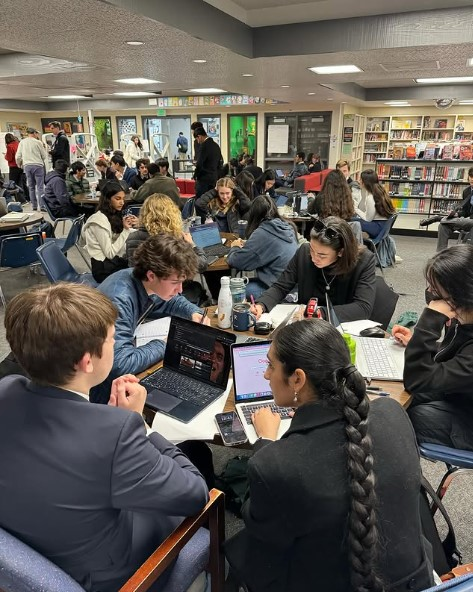
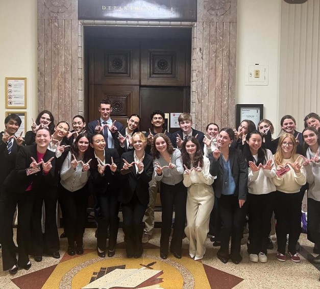
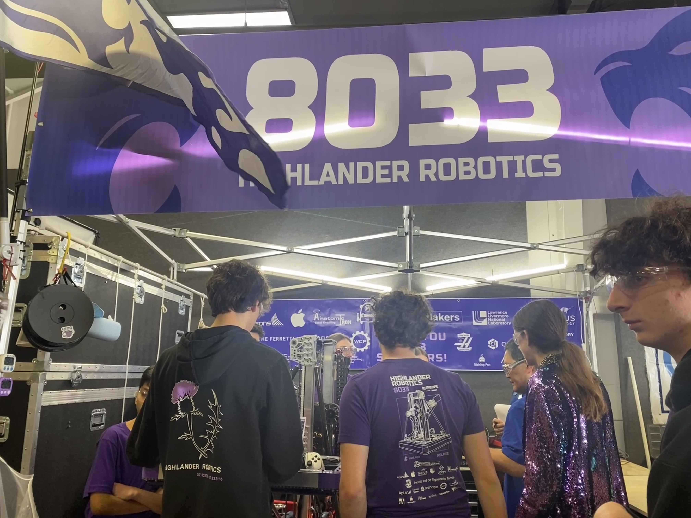

Zoe's Site
Welcome!
I am Zoe. I am a sophomore at Piedmont High School.
School: 2024 - 2025

Thus far, I am enjoying my sophomore year very much!
The workload has definitely increased significantly since freshman year, but the new opportunities and classes that being an older student offers are quite interesting and I look forward to continuing to learn more about myself and my interests as I continue my time here at PHS.
Extracurriculars 2024-2025

Beginning in middle school, I have been doing distance running for both my school's cross-country and track teams. They're both very demanding sports both physically and mentally, but I enjoy staying active and especially love when my teammates bring music on our runs around town.

I am a varsity debater in my second year on PHS' parliamentary debate team, which meets twice weekly and involves participation in many tournaments throughout California. Though I'm still working to hone my skills, I value the life skills it provides and role it has played in shaping my understanding of the world.

This year, I joined the school Mock Trial team, where I serve as a defense attorney on the alternate league. Since I have an avid interest in politics and law but hadn't previously had much of a chance to learn about it in action, it was a very informative experience and I'm looking forward to continue working with the team.

Since I was in fifth grade, I have been participating in robotics through the FIRST robotics league. This year marks my second on 8033 Highlander Robotics, our community team, and I couldn't be more excited to be attending the World Championship with my teammates this April.

My favorite show recently has been the psychological horror and thriller series Yellowjackets, which centers around a high school girls' soccer team whose plane crashes in the Canadian wilderness for 19 months and the lengths they go to for survival. The show operates using a dual timeline, switching between the girls' time in the wilderness and their adult selves twenty-five years later, exploring the effects this experience has on the people they become. Though I'm normally terrified by anything even remotely horror-related, the storyline and characters are incredibly compelling and well-crafted, and I'm very excited to see how the showrunners continue fleshing out the narrative in the recently released Season 3.